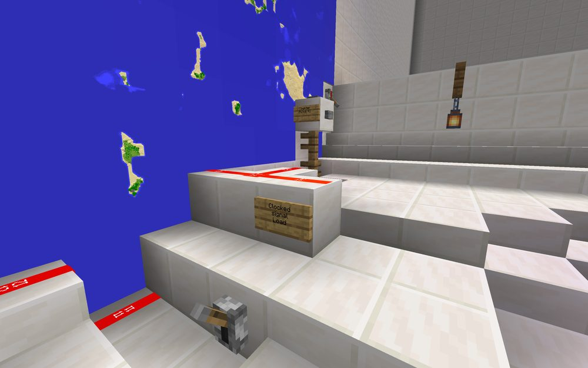
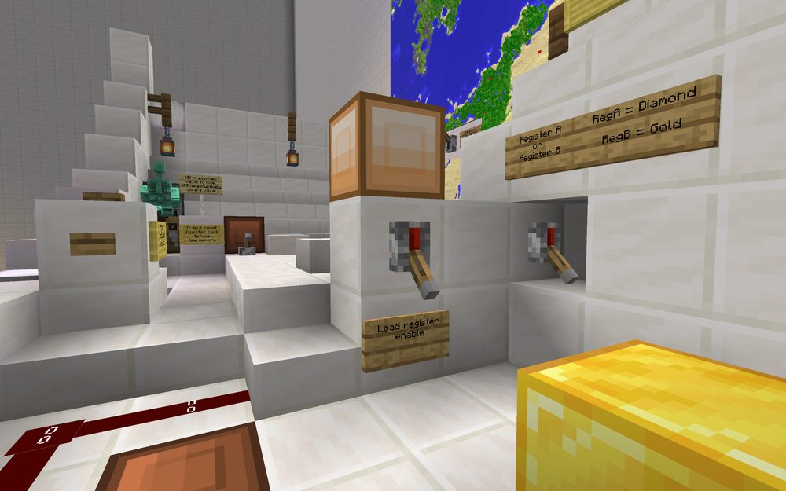
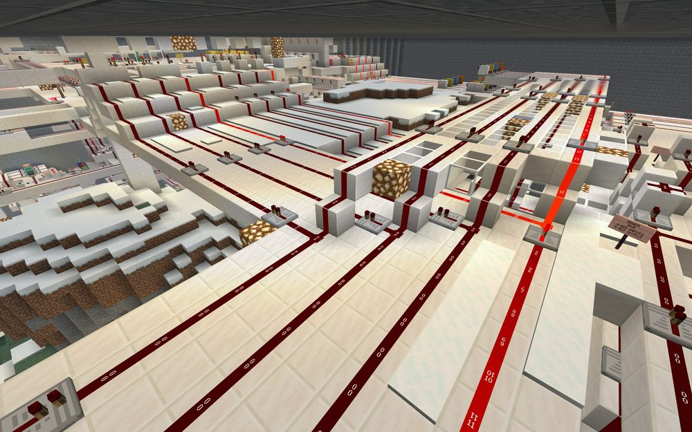
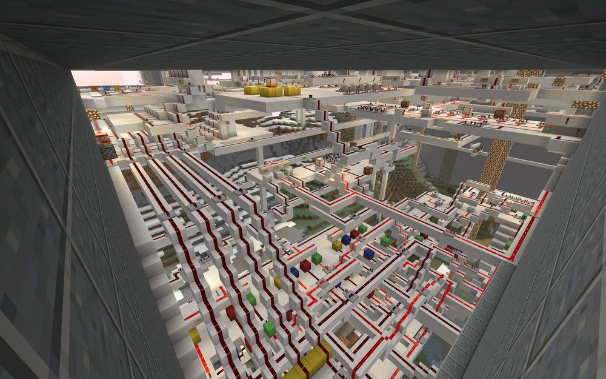
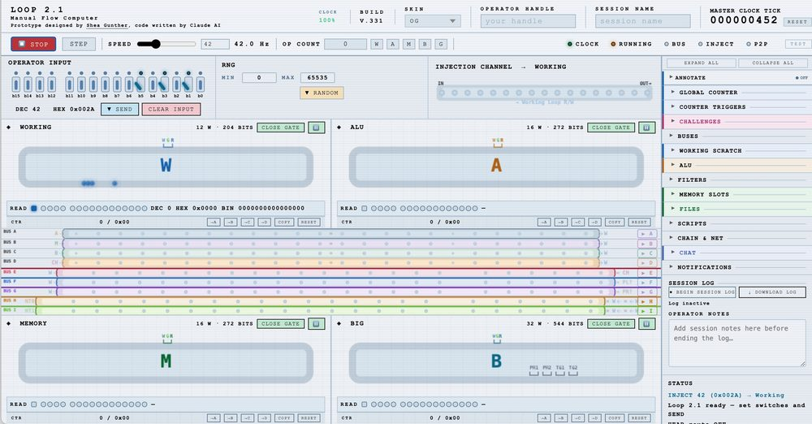
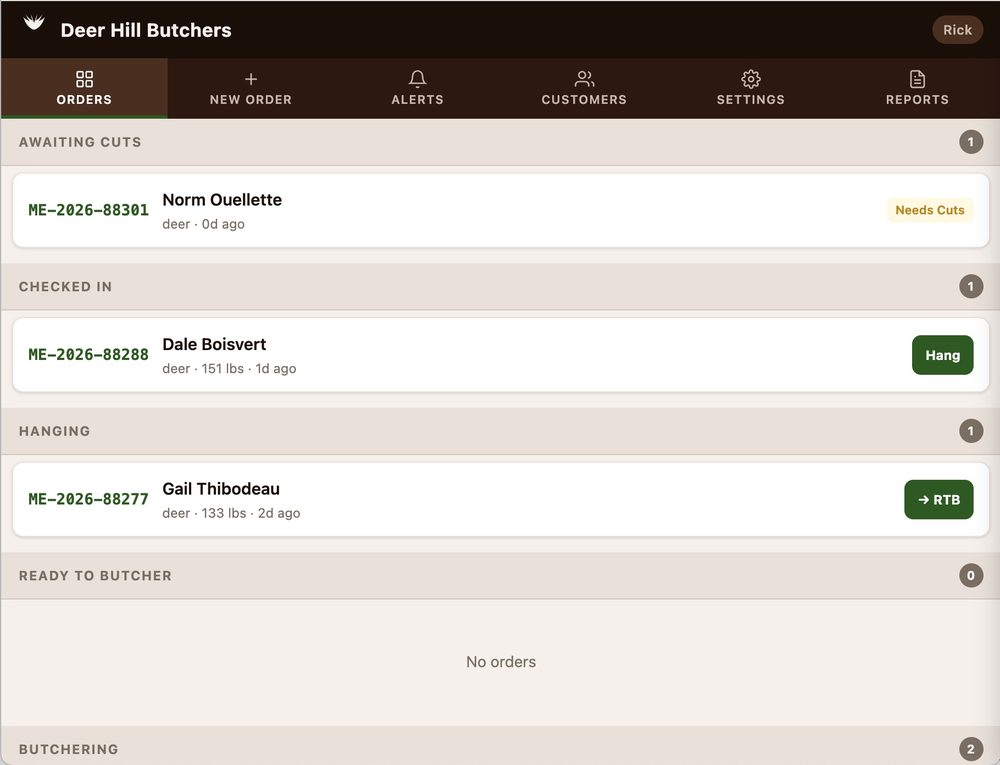
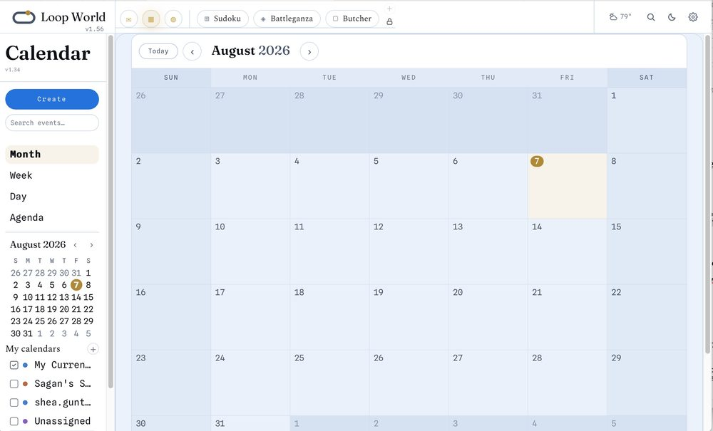
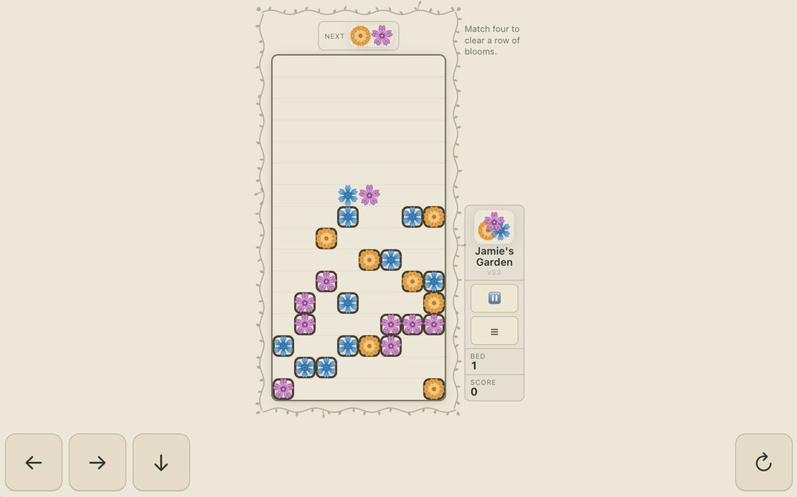
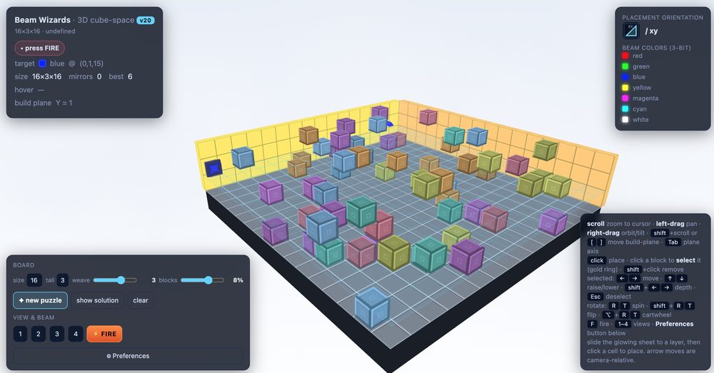
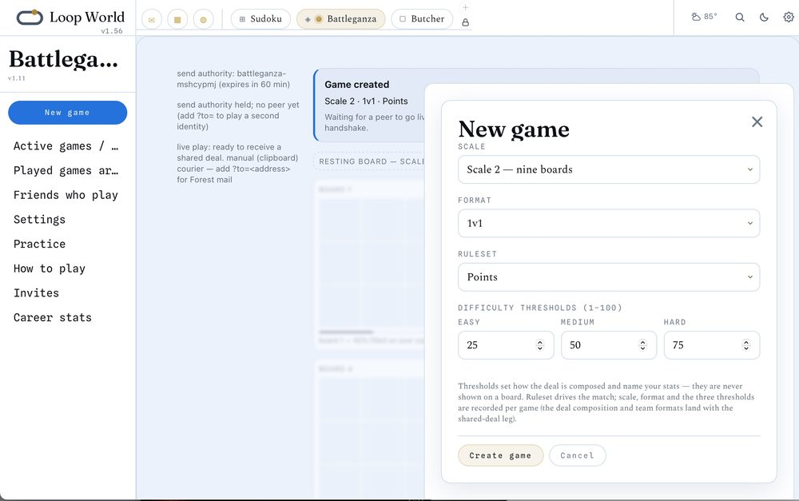

Disc 01 · 2017

Loop 1.0
A redstone loop-line computer, built by hand inside a Minecraft castle.

Timeline Artifacts · the collection wall
Twelve of them, gathered on one wall in the order they happened — from a redstone computer built by hand in 2017 to the site you're reading now. Each one opens to its place on the Timeline.

A redstone loop-line computer, built by hand inside a Minecraft castle.

First 'done': serial bits caught into parallel registers — RegA diamond, RegB gold.

The answer reloads back into the loop line — a 5-bit output closing the circle.

The redesign: built the display and controls before the arithmetic proved Minecraft too slow to be fun.

The manual flow computer: 18,000 lines, one HTML file, zero dependencies — the machine that outgrew Minecraft.
The methodology, extracted in one weekend — 20 documents, 45,000 words.

The first real Loop MMT — Multi-Module Theory — app: an order system for Deer Hill Butchers, built in four days.

A sovereign personal-data platform — email, calendar, contacts, and files on your own box. Live.

A falling-block game built as a gift for Jamie — installs to the home screen like any app.

A 3D-optics puzzle: steer light through lenses and mirrors. A kids' game with a university-course origin.

A Forest-native multiplayer game: Sudoku smashed into Tic-Tac-Toe, head to head.
The site you're reading — Loop MMT, coming out.